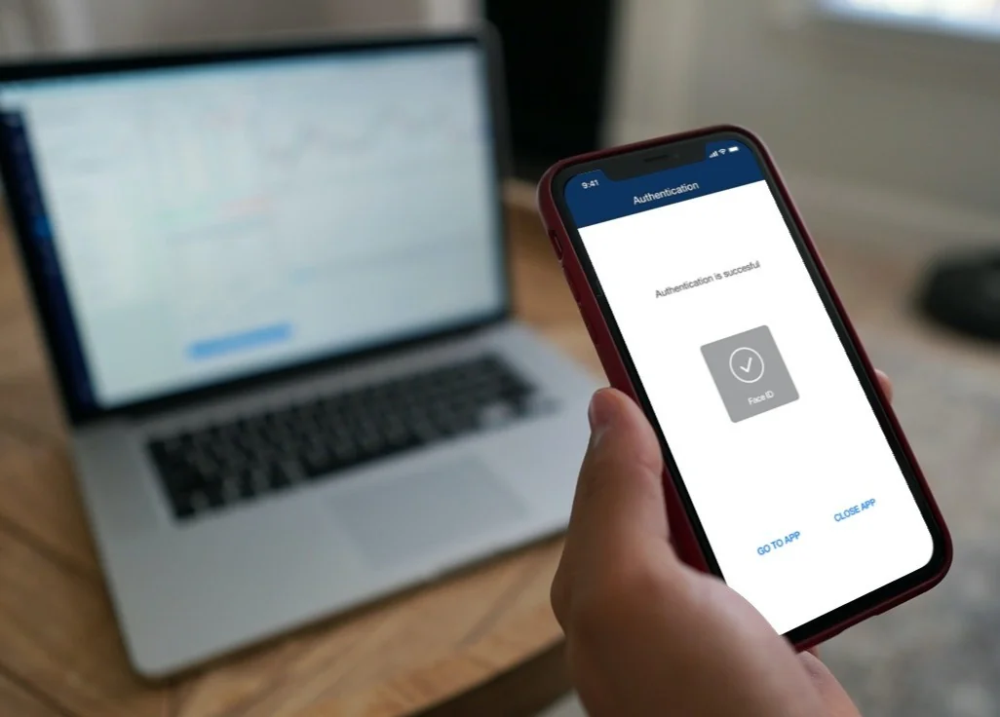
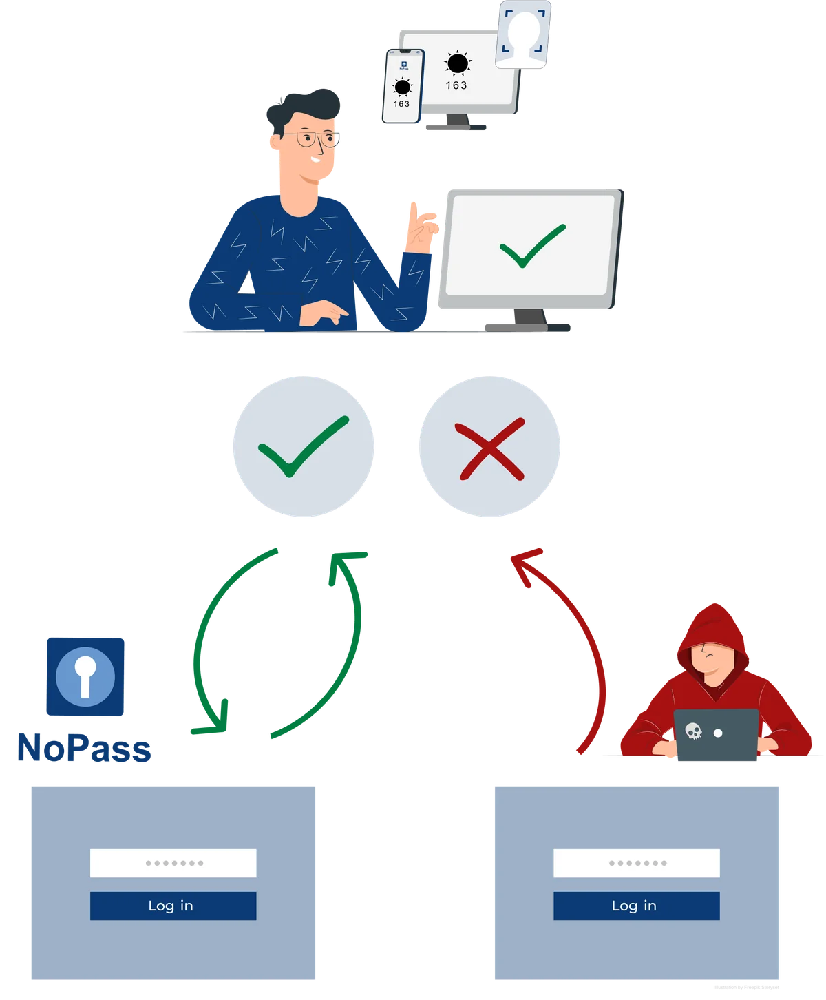

Passwords, two-factor and legacy multi-factor authentication solutions have one thing in common: they rely on shared secrets. That means that a user has a secret and a centralized authority holds the same secret. When authenticating, those two secrets are compared to approve user access. If a malicious third party intercepts the secret, they can impersonate the user. The bad news is that this reliance on shared secrets has kept large populations of users vulnerable to phishing, credential stuffing attacks, and password reuse while contributing to the steep rise in Account Take Over (ATO).
The end user has the responsibility for safeguarding credentials despite how perceptive and careful they are. This transfer of authentication challenges is one way from the user to the service, website or network. This opens the door to Man-in-the-Middle, Man-in-the-Browser, phishing and imposter websites that are springing up at a phenomenal rate.
Recent examples of this weakness are the hacks by passwordless vendors Microsoft and Okta, (BankInfoSecurity, March 22, 2022). While passwordless and Multi-Factor Authentication (MFA) are worthwhile goals, the one-way transfer that current methods use make them fall short in providing organizations adequate security while simultaneously delivering a simple and reliable user experience.
Once breached, your organization must navigate the series of disclosures for PR purposes or government mandates. These can create serious impacts on you and your organization including:
31% of consumers surveyed say they discontinued their relationship with the company that had a data breach
Of those consumers affected by one or more breaches, 65% say they lost trust in the breached organization
Stock Prices Drop an Average of 5 Percent when the Data Breach is Disclosed
Because the credential transfer is one-way, a hacker can easily install themselves between the user and the service to intercept anything the user is sending to the service and then replicate it later to gain access. This has happened too many times to continue accepting the risk of one-way authentication.
In order to thwart all common attacks such as Man-in-the-Middle, Man-in-the-Browser, phishing and imposter websites, a two-way communication between the user and the authentication service through Full Duplex Authentication® would dramatically improve security and mitigate these risks to near zero. In other words, the service must authenticate to the user first before the user provides their secure token and biometric to authenticate back to the service! This vital, patented process is the cornerstone of a robust security model that ensures hackers cannot gain access since they cannot replicate the encrypted token or the users biometric.

With Identité’s patented, Full Duplex Authentication®, the responsibility for starting and validating the authentication process rests solely with the user – even if they are tricked - who then allows the credentials to be passed to be authenticated by the requesting service.As a result, if the hacker attempts to gain access to a site, they will not succeed because there is no password and the user is still prompted for authentication by comparing and confirming the picture/number combination. Since the user knows they didn’t initiate the login, the request is declined and the transaction is denied. With Full Duplex Authentication®, the communication looks more like this:
The Full Duplex Authentication® model delivers some key benefits:
Users know they are on a valid website or network. The peace of mind this brings allows them to transact more comfortably and more often knowing they aren’t being compromised by imposter websites
Authentication is more natural which creates a more pleasant user experience. Happy users become long-term clients allowing you to gain market share from other vendors that don’t employ Full Duplex Authentication® as part of their security suite
No user data is sent until the server is authenticated
Multi-Factor, Multi-Channel user verification
Impossible to hijack the OTP codes because only metadata is sent
No centralized store of user’s personal information eliminates potential exposure of their data and the tremendous accompanying penalties in IT costs, share value and brand erosion
Eliminating the password addresses the vast majority of your security problems
Audits are much easier since you no longer have to worry about how your company protects, grants access to, encrypts and manages passwords
Full Duplex Authentication® is Simple and Secure
The adoption of modern multi-factor authentication technologies is one of the most impactful steps that can meaningfully reduce a company’s risk to compromised identities. More organizations are investigating and planning to move to passwordless technologies that include technologies like biometrics and public key cryptography in widely accessible devices.
The Full Duplex Authentication® process improves security with the two-way authentication for encrypted tokens and biometrics all while reducing friction from a truly passwordless process. From financial services to the healthcare sector, large enterprises are adopting passwordless systems at a remarkable pace and are seeking to transition to a more secure architecture. NoPass™ enhanced security finally protects both enterprise and the user leading to far greater levels of trust.